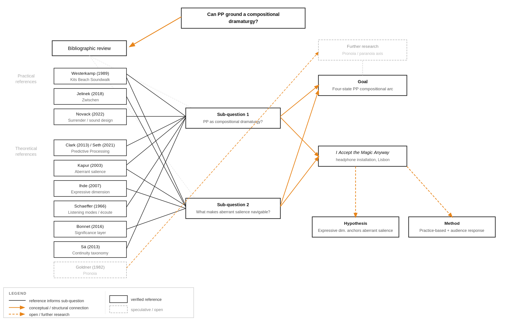

Project Incubation · Literature Review
Literature
Review
Annotated bibliography: theoretical and practical references.

Research map: references, sub-questions, hypothesis, methods.
3.1 Predictive Processing & Aberrant Salience
Clark, A. (2013). Whatever next? Predictive brains, situated agents, and the future of cognitive science. Behavioral and Brain Sciences, 36(3), 181–204.
Clark's paper is a landmark synthesis of Predictive Processing theory. The brain continuously generates predictions about incoming sensory data and updates them through prediction errors: mismatches between expectation and input. Building on this hierarchical framework, this piece treats the affective and prosodic features of voice (intonation, rhythm, breath) as a layer of prediction that can persist when semantic prediction fails, an extension of Clark's model rather than a claim he makes directly. That persistence lets the expressive dimension stay as an anchor when semantic content withdraws in State 3.
Predictive Processing
Prediction Error
Active Inference
Seth, A. (2021). Being You: A New Science of Consciousness. Dutton.
Seth develops PP into a theory of consciousness as "controlled hallucination": the brain's best prediction of the causes of sensory signals, not a direct readout of reality. This framing reframes the monastery experience: the footsteps were not a failure of perception but its normal operation. Relevant for framing the compositional arc as designing controlled versions of a process that already happens.
Controlled Hallucination
Consciousness
Perception as Inference
Kapur, S. (2003). Psychosis as a state of aberrant salience. American Journal of Psychiatry, 160(1), 13–23.
Kapur defines aberrant salience as the breakdown of the brain's filtering mechanism: everything demands attention, nothing can be dismissed as unimportant. Developed in psychosis research, the mechanism is borrowed here as a compositional state, not a clinical one. It is not meaning gain but meaning overwhelm; the boundary between figuration and abstraction dissolves. The piece aims to occupy the zone between over-figuration (monastery footsteps) and dissociation (categorisation shutdown).
Aberrant Salience
Salience Filter
Meaning Overwhelm
Vuust, P. & Friston, K. (2022). Why music moves us. Neuroscience and Biobehavioral Reviews.
Applies the PP framework to music, arguing that emotional and cognitive responses to sound are triggered when "expectations are met or artfully violated" (Kringelbach et al., 2024, as cited in Ibanez, 2026). This is the clearest statement that composers design PP conditions: the craft of composition is, in part, the craft of managing prediction error. Directly supports the claim that the four-state arc is a PP dramaturgy.
Musical Expectations
Artful Violation
3.2 Schaeffer's Listening Modes & Their Limits
Schaeffer, P. (1966). Traité des objets musicaux. Éditions du Seuil.
Schaeffer's listening taxonomy is the structural parallel to the PP arc. Écoute causale traces sound to its source; écoute réduite listens to sound as pure material, stripped of source and context. The movement from State 1 to State 3 in this piece follows roughly that sequence. The key difference is method: Schaeffer's reduced listening required a known sound, a turntable loop, and explicit instruction. The monastery shift arrived without any technique. The piece uses Schaeffer's taxonomy as a map of states, not a method for getting there.
Écoute causale
Écoute réduite
Objet sonore
Musique concrète
Bonnet, F.J. (2016). The Order of Sounds: A Sonorous Archipelago. Urbanomic/MIT Press.
Bonnet argues that reduced listening (hearing sound stripped of source and context) is impossible regardless of technique: listeners cannot stop bringing meaning to what they hear. This critique stands in State 3. The piece does not resolve this. It accepts it. The title came from exactly that: you accept what the experience gives you, regardless of whether it is true.
Limits of Reduced Listening
Meaning-making
3.3 The Dual Dimension of Voice (Ihde)
Ihde, D. (2007). Listening and Voice: Phenomenologies of Sound (2nd ed.). State University of New York Press.
Ihde argues that voice carries two simultaneous layers: the semantic content of what is said, and the expressive dimension of how it is said (tone, breath, hesitation, rhythm). A sentence spoken with hesitation communicates something different from the same sentence spoken confidently, even when the words are identical. In PP terms, these are separate prediction layers. In this piece, it is the expressive dimension that makes aberrant salience navigable rather than merely overwhelming: when semantic content withdraws in State 3, warmth and rhythm remain as a stable prior.
Expressive Dimension
Semantic Layer
Voice Phenomenology
Westerkamp, H. (1989). Kits Beach Soundwalk. Transformations, Empreintes Digitales.
A direct practical reference for the narrator's function: a warm voice naming field recordings that navigates without instructing and moves toward dream-like abstraction. Westerkamp demonstrates that the expressive dimension can carry the piece even as semantic content becomes less central. The narrator in I Accept the Magic Anyway models this approach in State 1 and 2, then tests what happens when semantic content withdraws further in State 3.
Soundscape Composition
Voice as Guide
Field Recording
Jelinek, J. (2018). Zwischen. Faitiche.
A practical reference for what the expressive dimension can do in electroacoustic form without a narrator. Jelinek's album demonstrates that warmth, hesitation, and breath can be compositionally approximated through instrumental and electronic means alone. Relevant as a contrast case: this piece argues that the voice's expressive dimension is not easily replaceable by other compositional tools when it comes to navigability under aberrant salience.
Electroacoustic Composition
Expressive Timbre
3.4 Forced Grace
Novack, D. (2022). Sound Design for Film: Liberating from Image, Seducing Surrender. PhD dissertation, Universidade Lusofona.
Novack argues that sound design works directly on the body, seducing the listener into releasing cognitive control: the body lets go first, the mind follows. Forced Grace is a useful contrast: it runs the other way. The body is afraid; the mind knows there is nothing to fear. Neither cancels the other. Grace and surrender are not synonyms, but share a structure: in both, the self stops managing. Where Heidegger's Angst (see below) dissolves observation entirely, a mood in which the world's familiar structure withdraws and nothing holds, Forced Grace keeps the observer in place. That is what the following entry unpacks.
Surrender
Seduction
Bodily Response
Angst (Heidegger)
Heidegger, M. (1962). Being and Time (J. Macquarrie & E. Robinson, Trans.). Harper & Row. (Original work published 1927)
Heidegger distinguishes Angst from ordinary fear: where fear has a determinate object, Angst is the mood in which the world's familiar structure withdraws and nothing offers stable meaning. Unlike Angst, Forced Grace does not dissolve observation: the narrator's metacognitive act ("I know it is not real") holds both states simultaneously. Heidegger's distinction matters here because it clarifies what the piece does not do: it does not aim for the undifferentiated breakdown of Angst, but for the tension of holding fear and knowledge in the same moment.
Angst
Mood
Worldhood
Goldner, F.H. (1982). Pronoia. Social Problems, 30(1), 82–91.
Goldner names pronoia: the irrational belief that the world conspires to do you good, the positive counterpart to paranoia. He calls it irrational; the belief has no basis in fact. The piece tests a different version: pronoia reached through metacognition. The "anyway" in the title is not delusion. It is a decision. Mischa Nijhof's piece in the installation arrives at the same mechanism through warmth rather than the metacognitive fight: whether pronoia and paranoia together constitute a compositional axis is a question the paper opens without closing.
Pronoia
Metacognition
Paranoia
Sá, A. (2013). Continuity/discontinuity taxonomy for audiovisual instrument design. [Conference paper]
Sá maps audiovisual relationships along a continuity axis. Ambivalent discontinuity corresponds to rising prediction error (State 2); radical discontinuity approximates aberrant salience (State 3). The taxonomy was designed for audiovisual performance; this piece applies the sonic axis alone. The approximation is rough: radical discontinuity describes a functioning system registering a rupture, while aberrant salience describes one whose filtering has failed. The distinction matters compositionally.
Continuity/Discontinuity
Ambivalent Discontinuity
Radical Discontinuity
Calvino, I. (1983). Palomar. Einaudi.
Calvino's prose in Palomar provided the grammatical model for the State 1 narrator voice: short declarative sentences, one observation at a time. "Those are rain drops. The roof. The wind." The grammar was designed to give the listener permission to stop searching for a threat. Adriana Sá's observation after listening (that the naming had introduced doubt rather than resolved it) suggests naming a sound raises the possibility it might not have been there. A voice that identifies a sound is also a voice that could be wrong.
Narrator Grammar
Observation
Herbert, F. (1965). Dune. Chilton Books.
The Litany Against Fear from Dune is used in State 4 of the piece. Not because it resolves anything, but because recitation is a metacognitive act: naming the fear while knowing its nature. "I must not fear. Fear is the mind-killer…" The structure of the litany (threat → void → self → recognition) matches the transition out of aberrant salience. The narrator's final broken sentence in State 4 breaks where the explanation would begin; that break is already the metacognitive act.
Metacognition
Litany Against Fear
Recitation